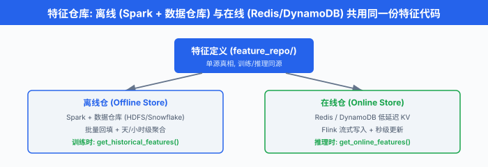
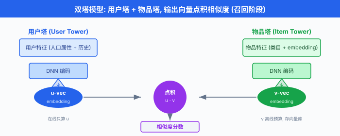
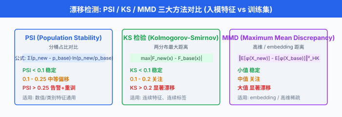

ML 系统设计 8 步框架¶
一句话总结：把 ML 系统设计面试拆成 8 步可复用的脚手架——从澄清需求到部署监控迭代，让你在 45 分钟白板时间里有清晰的时间盒、必问清单与每一步的"面试官想听什么".
Facebook ML 系统设计 45 分钟的实战场景，很少是"做个推荐算法"——而是"在白板上把整个链路讲清楚". 这一节给你一张能走通 60 分钟的脚手架：8 步框架 + 每步的 checklist + 关键追问 + 一道完整例题 + 5 大常见误区 + 实战计时脚本.
0. 开场：Facebook ML 系统设计 45 分钟，到底面什么?¶
想象一下，你刚坐到 Zoom 里，屏幕共享打开 Google Docs 白板，面试官 (前 Facebook ML Engineer，现 Anthropic / OpenAI / 字节 7 年经验) 看完你简历，说了一句:
"好，我们进入系统设计环节。 假设你加入我们团队，我要你从零设计一个短视频推荐系统的召回-粗排-精排模块. 你是 PM、你是架构师、你是 MLE——45 分钟内把这个系统的核心组件讲清楚。 开始吧."
第一反应是不是想立刻开始画"召回用双塔，排序用 DCN，部署用 vLLM"? 别急。 这就是 80% 候选人踩的第一个坑——跳过需求澄清直接跳模型. 等你画完模型才发现: - 面试官原本想考的是冷启动 - 你的候选集大小应该是 100 万不是 1 亿 - 精排模型延迟预算只有 30 ms，你选的 DCN 跑不动
ML 系统设计的本质，是和面试官共同定义问题. 这一节给你 8 步框架，让你从"被动答模型"切换到"主动控场".
1. 8 步框架总览¶
8 步框架不是 Alex Xu 原创——它是把 Ch18/04 那一节讲的 ML 生命周期 (Problem Framing → Data → Features → Training → Evaluation → Deployment → Monitoring → Iteration) 重新切成 8 个白板可讲的小段，每一段都明确时间预算、必问清单、关键产出。 下面这张表先给你全局视野，后面逐步展开:
| Step | 名称 | 时间盒 (45 min) | 必答问题 | 关键产出 |
|---|---|---|---|---|
| 1 | Clarify (需求澄清) | 5 min | 给谁推？什么场景？多少候选？冷启动怎么办？ | 需求清单 + 业务指标 |
| 2 | Metrics (指标设计) | 5 min | online vs offline 是什么？AUC 提升 1% = CTR 提升 1% 吗？ | offline + online + 护栏指标 |
| 3 | Data (数据源) | 5 min | 用 impression log 还是 click log？label 怎么构造？ | 数据流图 + 标签方案 |
| 4 | Features (特征工程) | 5 min | online/offline 一致性怎么做？freshness 多高？ | 特征仓库设计 |
| 5 | Model (模型选择) | 8 min | 双塔 vs DNN vs 两阶段？baseline 怎么定？ | baseline → 进阶模型 |
| 6 | Training (训练) | 5 min | 类别不平衡怎么办？负采样比例？ | 训练方案 + 采样策略 |
| 7 | Deployment (部署) | 7 min | 在线推理 vs 离线召回？延迟预算？ | 服务架构 + 监控埋点 |
| 8 | Monitor (监控迭代) | 5 min | 漂移怎么检？公平性怎么监？反馈回路怎么破？ | 监控告警 + 迭代节奏 |
关键认知：这 8 步不是顺序的流水线，而是带反馈回路的循环——监控发现的问题会反过来推动 Step 2 重设指标、Step 3 改数据、Step 4 加特征、Step 5 换模型。 画白板时，把 8 步画成圆环 (见上面那张图)，中心写"用户"，一眼能传达"这是闭环".
2. Step 1 — 需求澄清 (Clarify): 5 分钟问对 5 个问题¶
2.1 为什么第一步最容易被跳?¶
大多数候选人听到题目的瞬间，大脑会"啪"地跳到模型——这是工程师的本能反应。 但 ML 系统设计的真正考点，在于你怎么把一个模糊业务问题变成一个可量化、可约束的 ML 问题. 跳过这一步，你后面所有的设计都是"空对空"，面试官会在第 15 分钟打断你："等一下，你的用户是谁？候选池多大?"
2.2 5W1H + 业务指标 Checklist¶
把 Step 1 固化成 6 个必问问题，1 个都不能省:
# Step 1 Checklist (5 min)
clarify_checklist = {
"What": "推荐什么? (短视频 / 商品 / 新闻 / 朋友)",
"Who": "给谁推? (新用户 vs 老用户, 头部 vs 长尾, 国内 vs 海外)",
"Where": "在什么场景推? (首页 Feed / 详情页相关推荐 / 推送通知)",
"When": "实时性要求? (毫秒级 / 秒级 / 分钟级)",
"Why": "业务目标? (CTR / 留存 / GMV / 多样性)",
"How many": "候选池多大? (100 / 1万 / 100万 / 1亿)",
# 加 1 个冷启动问题, 面试官一定会追问
"Cold start": "新用户 / 新物品 / 新场景怎么处理? (无历史行为)",
}
2.3 面试官想听什么?¶
举一道真实题目："设计 YouTube 视频推荐". 候选人经常只问"推荐什么"，然后就开始画双塔。 面试官期待的是:
"给谁推：登录 vs 未登录用户 (影响特征可用性)；视频观看深度 vs 短视频刷 Feed (影响 session 模型). 推荐场景：首页推荐 (候选池 1000 万) vs 看完后的'下一个'推荐 (候选池 1 亿，强相关性). 推荐数量：每屏 5 个，总共滚动 10 屏 (影响 latency 预算). 冷启动：新用户没有行为，用热门 + 人口属性 + Bandit. 业务指标：长期 watch time > 短期 CTR (YouTube 公开说过的). 基线：当前是热门 Top-N，我必须证明 ML > Top-N 才有意义."
这一段话，是 Step 1 的满分答案。 它把模糊题目变成了 6 个可量化的约束。
2.4 关键追问：反例¶
❌ 反例 1: "我们要设计一个推荐系统，用深度学习." — 没说给谁推，没说候选池，等于没澄清。
❌ 反例 2: "用户画像 + 物品画像 + 双塔召回." — 直接跳过澄清，跳到模型。 面试官下一步就会问 "用户画像从哪来？物品画像多久更新一次？候选池多大?"，你会卡壳。
3. Step 2 — 指标设计 (Metrics)：离线 AUC 和在线 CTR 真的对应吗?¶
3.1 指标的三层结构¶
设计指标最容易踩的坑是只看单一指标. 一个成熟的 ML 系统，指标分三层:
# Step 2 三层指标 (5 min)
metrics = {
"offline": { # 离线: 用历史数据评估
"primary": "AUC / NDCG / MAP", # 排序质量
"secondary": "Recall@K / Hit Rate", # 召回覆盖
"calibration": "Brier Score", # 校准
},
"online": { # 在线: 用 A/B 测试评估
"primary": "CTR / watch time / GMV", # 业务目标
"guardrail": ["页面加载时间", "崩溃率", "多样性指标"],
},
"long_term": { # 长期: 滞后效应
"retention": "7 日 / 30 日留存",
"creator_health": "创作者发布频次 + 收入",
"ecosystem": "长尾物品曝光占比",
},
}
3.2 AUC 公式与 calibration¶
AUC (Area Under the ROC Curve) 度量的是模型把正样本排在负样本前面的概率。 数学定义是:
其中 \(s(x)\) 是模型打分，\(x^+, x^-\) 分别是正负样本。 完美的排序器 \(\text{AUC} = 1\)，随机猜测 \(\text{AUC} = 0.5\).
但 AUC 高的模型不一定 calibration 好. 校准 (calibration) 关心的是：模型说 \(P(\text{click}) = 0.7\) 时，真实点击率是不是真的接近 0.7. Brier Score 度量 calibration:
其中 \(p_i\) 是预测概率，\(y_i \in \{0, 1\}\) 是真实标签。 推荐系统的 CTR 预估对 calibration 很敏感——CTR 用于广告定价、流量分配，偏 1% 的 calibration 误差，一年的营收误差可能上千万。
3.3 Offline-Online 偏移：面试官必问¶
灵魂拷问: "离线 AUC 提升 1%，在线 CTR 一定提升 1% 吗?"
答案: 不一定，通常高得多或低得多. 这就是著名的 offline-online gap (离线-在线鸿沟). 常见原因:
- 数据分布偏移：离线用历史日志训练，在线面对的实时分布不一样 (Step 8 数据漂移).
- 位置偏差 (position bias)：用户更倾向点排在第 1 位的，离线 AUC 不会自动扣除这个偏差。
- 曝光偏差 (exposure bias)：用户没曝光的物品 = 默认负样本，但其实可能是用户没看到不是不喜欢。
- 延迟反馈：离线评估是即时的，在线指标 (watch time，留存) 有滞后。
一句话：离线看 ranking，在线看 impact. 不要把 AUC 当唯一真理.
3.4 面试官想听什么?¶
YouTube 推荐题的标准答案 (来自 Covington et al. 2016 论文，Deep Neural Networks for YouTube Recommendations):
"离线指标：选用 MAP (Mean Average Precision) 而不是 AUC，因为 YouTube 关心的是排序质量而不是二分类。 在线指标: watch time per session 是金标准，因为 YouTube 的商业模式依赖总观看时长而不是点击。 护栏指标：页面加载时间 ≤ 200ms，崩溃率不增长。 长期指标：用户 7 日留存 + 创作者上传视频数，防止推荐走向'老视频越推越热'的封闭回路."
4. Step 3 — 数据源 (Data): impression log vs click log¶
4.1 三大数据源¶
数据是 ML 系统的"原料". 一个推荐系统的数据通常分三层:
# Step 3 三大数据源 (5 min)
data_sources = {
"行为日志": {
"impression log": "曝光日志 (用户看到哪些物品)", # 大, 含负样本
"click log": "点击日志 (用户点了哪些)", # 中, 强正样本
"watch log": "观看日志 (看完 / 跳过 / 完播率)", # 中, 反映兴趣深度
},
"内容数据": {
"item metadata": "物品元信息 (标题 / 标签 / 时长 / 创作者)",
"embedding": "预训练的内容嵌入 (来自 BERT / ViT / 多模态)",
},
"用户画像": {
"demographic": "人口属性 (年龄 / 性别 / 地域)",
"behavioral": "行为画像 (兴趣标签 / 长期偏好 / 短期 session)",
},
}
4.2 标签怎么构造?¶
面试官必问："你用什么当正负样本?"
- 二分类 (CTR)：点击 = 正样本，曝光未点击 = 负样本。 简单，但有 position bias.
- 多分类 (完播率)：完播 / 跳到 50% / 跳过 三分类。 更细，但需要看视频 (延迟反馈).
- 回归 (watch time)：直接预测用户观看时长。 YouTube 2016 论文用的就是这个——他们用 weighted logistic regression 把回归问题转成二分类。
4.3 关键追问：反例¶
❌ 反例: "我用 click log 当正样本，剩下的当负样本." — 没有处理位置偏差 (第 1 位的 CTR 天然高) 和曝光偏差 (没曝光的物品被误当负样本).
✅ 正解: "我对位置做 debias——用 expected_ctr(position) 当先验，或者用 click model (如 PBM, Position-Based Model) 修正。 对未曝光样本做 negative sampling，比例 1:5 到 1:20，比例太低模型分不开正负，太高训练太慢."
4.4 中文圈实战¶
字节豆包 / 抖音 Feed / 小红书 Feed 的训练数据，都遵循这一套——但字节会额外做'深度学习负采样'：用上一版模型的预测分数挑出"模型以为会点但用户没点"的样本作为 hard negative，训练下一版。 这是普通公司和字节差距最大的细节之一。
5. Step 4 — 特征工程 (Features)：特征仓库与 online-offline 一致性¶
5.1 特征分类¶
特征是 ML 系统的"杠杆点". 一个推荐系统常见的特征分三类:
# Step 4 特征工程 (5 min)
feature_taxonomy = {
"用户特征": ["人口属性 (年龄/性别)", "长期偏好 (类目偏好)", "短期 session (最近 10 次动作)"],
"物品特征": ["静态属性 (类目/标签)", "动态统计 (7 天 CTR)", "嵌入向量 (BERT/多模态)"],
"上下文特征": ["时间 (小时/星期)", "设备 (iOS/Android)", "网络 (WiFi/4G)", "位置 (同城/全国)"],
}
5.2 特征仓库 (Feature Store) 设计¶
特征存储 (Feature Store) 是保证训练-上线一致性的核心基础设施。 同一份特征计算逻辑同时喂给离线仓 (训练用) 和在线仓 (推理用)，消除训练-上线偏差 (training-serving skew，即在线-离线一致性 online-offline consistency 受损).

下面是特征仓库查询的典型代码:
# 特征仓库查询 (Feature Store Query)
from feast import FeatureStore
fs = FeatureStore(repo_path="./feature_repo")
# 训练时: 从离线仓拉用户特征 (batch)
training_df = fs.get_historical_features(
entity_df=user_ids_df, # 待预测的用户 ID
features=[
"user_profile:age",
"user_profile:gender",
"user_stats:ctr_7d", # 7 天 CTR
"user_stats:favorite_category_embedding",
],
).to_df()
# 推理时: 从在线仓拉同一份特征 (online, 毫秒级)
online_features = fs.get_online_features(
entity_rows=[{"user_id": "u_123"}],
features=[
"user_profile:age",
"user_stats:ctr_7d",
],
).to_dict()
关键: get_historical_features 和 get_online_features 调用的是同一份特征定义 (feature_repo/ 里的 Python 配置)，这就消除了"训练时算的 CTR 和上线时算的 CTR 不一样"的问题。
5.3 特征鲜度 (Feature Freshness)¶
不同特征对实时性的要求不一样:
| 特征类型 | 鲜度需求 | 计算成本 | 例子 |
|---|---|---|---|
| 人口属性 | 天级 | 低 (离线批处理) | 年龄 / 性别 |
| 长期偏好 | 小时级 | 中 (Spark 聚合) | 7 天类目 CTR |
| 短期 session | 秒级 | 高 (流式计算) | 最近 10 次动作 |
| 实时上下文 | 毫秒级 | 极高 (直接传参) | 当前小时 / 当前位置 |
鲜度越高的特征，服务成本越高。 反欺诈要毫秒级 (用户刚下完单这一笔是不是洗钱?)，推荐只要小时级 (用户喜欢什么类别不需要秒级变).
5.4 在线-离线一致性 (online-offline consistency) 的工程保证¶
这是 ML 系统的"魔鬼细节"——同样的特征，离线用 Spark 算的是 0.73，在线用 Flink 算的是 0.71，差 2 个百分点。 模型预测就完全不可信。
工程上保证一致性的三招:
- 统一特征定义：用 Feast / Tecton / Hopsworks 等 Feature Store，一份代码两端共用。
- 统一数据源：离线训练数据和在线日志走同一个 Kafka topic，数据 schema 强校验。
- 离线回灌 (backfill)：上线前用近 7 天线上数据回灌离线，看 offline AUC 和 online AUC 差距。
一句话：online 和 offline 的特征计算逻辑必须同源，否则下游一切都白做。
6. Step 5 — 模型选择 (Model)：简单到复杂，baseline 优先¶
6.1 模型选择的"简单到复杂"原则¶
ML 系统设计的常见误区是上来就堆 SOTA 模型. 正确顺序是：baseline → 线性 → 树模型 → 深度模型 → 两阶段. 每一步升级都要能解释"为什么需要更复杂":
# Step 5 模型选择阶梯 (8 min)
model_progression = [
"Baseline: 热门 Top-N (按 CTR 排序)",
"线性: LR (逻辑回归) + 手工交叉特征",
"树模型: XGBoost / LightGBM (工业界主流)",
"深度: Wide & Deep / DCN / DeepFM (特征自动交叉)",
"两阶段: 召回 (双塔) + 排序 (DCN) + 重排 (MMR/规则)",
]
每一步升级都是"用工程换精度". LR → XGBoost 提升大 (非线性 + 特征交叉), XGBoost → 深度学习提升小 (主要靠 embedding 捕捉稀疏特征)，但深度学习的可扩展性 (新用户 / 新物品冷启动靠 embedding 泛化) 强于树模型。
6.2 双塔模型 (Two-Tower Model) 与召回¶
召回阶段的常见选择是双塔模型 (two-tower model)：两侧分别用 DNN 把用户和物品编码成 embedding，然后用内积算相似度。 优点：物品 embedding 可以离线预算好存到向量数据库，在线只算用户 embedding，推理极快。

# 双塔召回模型示意 (PyTorch)
import torch
import torch.nn as nn
class TwoTower(nn.Module):
def __init__(self, user_dim, item_dim, embed_dim=64):
super().__init__()
self.user_tower = nn.Sequential(
nn.Linear(user_dim, 256), nn.ReLU(),
nn.Linear(256, embed_dim), # 输出 user embedding
)
self.item_tower = nn.Sequential(
nn.Linear(item_dim, 256), nn.ReLU(),
nn.Linear(256, embed_dim), # 输出 item embedding
)
def forward(self, user_feat, item_feat):
u = self.user_tower(user_feat) # (B, 64)
v = self.item_tower(item_feat) # (B, 64)
# 训练: 内积 + 交叉熵
logits = torch.matmul(u, v.T) # (B, B)
return logits
# 在线召回: 算 user embedding, 然后 ANN 检索
def get_user_embedding(self, user_feat):
return self.user_tower(user_feat)
6.3 排序阶段：Wide & Deep, DCN, DeepFM¶
精排 (ranking) 阶段，2016 年之后的主流架构是 Wide & Deep (Google 2016, Cheng et al.): "Wide" 部分记忆 (memorization，手工交叉特征), "Deep" 部分泛化 (generalization，嵌入 + DNN). 后来的 DCN (Deep & Cross Network) 和 DeepFM 用网络结构自动学习特征交叉，比手工更鲁棒。
但要警惕：树模型 (XGBoost) 在中小规模表格数据上常常比深度学习更强. 抖音 / 字节内部的很多排序模型都是 GBDT + LR 的组合，而不是一上来就 DNN.
6.4 面试官想听什么?¶
YouTube 推荐 (Covington 2016) 的标准答案:
"召回：双塔模型，用户侧用观看历史 + 人口属性，物品侧用视频 embedding + 类目。 候选池 1000 万，召回 1000 个。 排序：深度神经网络，输入 = 用户特征 + 物品特征 + 交叉特征，用 weighted logistic regression 把 watch time 转成二分类问题。 重排：多样性规则 (同一创作者不超过 3 个视频) + 探索 (Bandit / Thompson sampling)."
这一段，把"模型选择"具体到架构名 + 输入维度 + 输出维度，面试官很容易追问细节。
7. Step 6 — 训练 (Training)：数据不平衡与采样¶
7.1 类别不平衡¶
CTR 预估里，正样本 (点击) 比例往往只有 1%-5%，这是严重的类别不平衡。 不处理的训练会让模型把所有样本都预测成负样本，AUC 看起来 0.5 但 recall 是 0.
四种常用应对:
| 方法 | 原理 | 优缺点 |
|---|---|---|
| 下采样 (downsample) | 随机扔掉一部分负样本，让正负比例 1:5 | 简单，但丢失信息 |
| 上权重 (upweight) | 损失函数里给正样本更高权重 | 简单，不丢数据，但需调权重 |
| 过采样 (oversample) | 复制正样本，1:1 | 易过拟合，不推荐 |
| Focal loss | 难样本权重高，易样本权重低 | 深度学习首选 |
下采样 + class weight 是工业界最常用组合。 代码示例:
# 训练循环: 下采样 + class weight + Focal Loss
import torch
import torch.nn as nn
from torch.utils.data import DataLoader, WeightedRandomSampler
class FocalLoss(nn.Module):
"""Focal Loss: 解决类别不平衡, 让难样本权重更高."""
def __init__(self, alpha=0.25, gamma=2.0):
super().__init__()
self.alpha, self.gamma = alpha, gamma
def forward(self, logits, targets):
# logits: (B,), targets: {0, 1}
bce = nn.functional.binary_cross_entropy_with_logits(
logits, targets.float(), reduction="none"
)
p = torch.sigmoid(logits)
pt = p * targets + (1 - p) * (1 - targets) # 预测对的概率
alpha_t = self.alpha * targets + (1 - self.alpha) * (1 - targets)
focal_weight = alpha_t * (1 - pt) ** self.gamma
return (focal_weight * bce).mean()
# 训练时: 用 WeightedRandomSampler 给正样本更高采样权重
train_dataset = CTRDataset(X_train, y_train)
sample_weights = [5.0 if y == 1 else 1.0 for y in y_train] # 正样本权重 5x
sampler = WeightedRandomSampler(sample_weights, num_samples=len(y_train), replacement=True)
train_loader = DataLoader(train_dataset, batch_size=1024, sampler=sampler)
model = CTRDNN(input_dim=128, hidden=256)
optimizer = torch.optim.Adam(model.parameters(), lr=1e-3)
criterion = FocalLoss(alpha=0.25, gamma=2.0)
for epoch in range(20):
model.train()
for x, y in train_loader:
logits = model(x)
loss = criterion(logits.squeeze(), y)
optimizer.zero_grad(); loss.backward(); optimizer.step()
7.2 负采样比例¶
推荐系统训练时，不可能用全量负样本 (1 亿物品 × 1 亿用户 = 1e16 样本). 实际只采样一小部分负样本，常见比例 1:5 到 1:20.
关键点：负采样要分层，不能只采随机负样本。 YouTube 2016 论文的做法是：负样本从"用户看过但没点"的集合里采，加上"完全没曝光的随机物品". 后者保证 coverage，前者提供 hard negative.
7.3 训练基础设施¶
工业级训练需要:
- 分布式：数据并行 (PyTorch DDP) + 模型并行 (DeepSpeed / Megatron)
- 混合精度: FP16 + FP32 master weight，省显存 50%
- 检查点：每 N 步存一次，断点恢复
- 实验追踪: W&B / MLflow，记录超参 + 指标 + 数据版本
- 流水线编排: Airflow / Kubeflow / Metaflow，每天自动重训
面试官问"你怎么训练这个模型"，不要只答"用 PyTorch"——要答"用 PyTorch + DeepSpeed 在 8 卡 A100 上，数据并行，混合精度，每天凌晨 4 点用过去 30 天数据重训，训练日志在 W&B".
8. Step 7 — 部署 (Deployment)：在线学习 vs 离线训练 + Push¶
8.1 部署的三大策略¶
# Step 7 部署策略 (7 min)
deployment_strategies = {
"离线训练 + 推送 (offline + push)": {
"节奏": "每天 / 每小时重训, 推送新模型",
"延迟": "分钟级 (从用户行为到模型更新)",
"适用": "推荐 / 广告 (用户兴趣相对稳定)",
},
"在线推理 (online inference)": {
"节奏": "请求来了实时算",
"延迟": "毫秒级 (VLLM 风格, KV cache 优化)",
"适用": "搜索 / LLM / 反欺诈 (每次请求都要算)",
},
"在线学习 (online learning)": {
"节奏": "模型参数持续更新 (FTRL / 在线 SGD)",
"延迟": "秒级",
"适用": "广告 CTR (实时性强, 但稳定性差)",
},
}
8.2 在线推理 wrapper¶
# 在线推理 wrapper (FastAPI + Triton)
from fastapi import FastAPI, Request
import numpy as np
import tritonclient.http as triton_http
app = FastAPI()
# 客户端连接 Triton Inference Server (gRPC / HTTP)
triton_client = triton_http.InferenceServerClient(url="triton:8000")
@app.post("/predict")
async def predict(request: Request):
"""在线推理: 单个用户 × 候选物品 → 点击概率."""
body = await request.json()
user_id = body["user_id"]
item_ids = body["item_ids"] # 100 个候选
# 1. 在线拉用户特征 (Redis, 毫秒级)
user_feat = redis_client.hgetall(f"user:{user_id}")
# 2. 拼 batch, 调 Triton
batch_size = len(item_ids)
input_features = np.stack([
np.concatenate([
np.frombuffer(user_feat[b"vec"]),
np.frombuffer(redis_client.hgetall(f"item:{iid}")[b"vec"]),
]) for iid in item_ids
]).astype(np.float32)
# 3. Triton 推理
inputs = [triton_http.InferInput("features", input_features.shape, "FP32")]
inputs[0].set_data_from_numpy(input_features)
outputs = [triton_http.InferRequestedOutput("logits")]
result = triton_client.infer(model_name="ctr_ranker", inputs=inputs, outputs=outputs)
logits = result.as_numpy("logits") # (batch_size,)
# 4. 返回 top-K
scores = 1 / (1 + np.exp(-logits)) # sigmoid
top_k = np.argsort(-scores)[:10]
return {"top_items": [item_ids[i] for i in top_k]}
8.3 在线推理 vs 离线召回¶
| 维度 | 在线推理 (Real-time) | 离线召回 (Pre-computed) |
|---|---|---|
| 延迟 | 10-100 ms | 0-5 ms (从缓存读) |
| 新鲜度 | 实时 (拿到当前 session) | 小时 / 天级 |
| 成本 | 高 (GPU 推理 / QPS) | 低 (一次预算，反复用) |
| 适用 | LLM / 反欺诈 / 搜索排序 | 推荐召回 / 物品 embedding |
大系统两者并用：离线召回预算好 80% 流量 (热门 / 老用户偏好稳定)，在线推理覆盖 20% 长尾 (新用户 / 新物品 / 实时 session).
8.4 上线策略：灰度 + A/B¶
不要一上来就 100% 流量切到新模型。 标准流程:
- 影子部署：新模型和旧模型并行，但只返回旧模型结果。 比对差异，抓 bug.
- 灰度发布: 1% → 5% → 10%，看核心指标 (错误率 / 延迟) 不爆炸。
- A/B 测试: 50% 对照 vs 50% 实验，跑 1-2 周，看显著性 (Ch18/02 详述).
9. Step 8 — 监控迭代 (Monitor)：数据漂移，公平性，反馈回路¶
9.1 ML 系统特有的三类监控¶
通用监控 (CPU / 内存 / QPS / 错误率) Ch15 已讲。 ML 系统还要监控:
# Step 8 监控三大类 (5 min)
ml_monitoring = {
"数据漂移 (data drift)": {
"PSI": "Population Stability Index > 0.25 告警",
"KS 检验": "特征分布对比训练集",
"embedding drift": "MMD 距离 / 质心距离",
},
"概念漂移 (concept drift)": {
"代理指标": "CTR / watch time 持续下滑",
"label 滞后": "等真实标签回流再校准",
},
"公平性 (fairness)": {
"demographic parity": "各群体正预测率差距",
"equal opportunity": "各群体真正例率差距",
"calibration": "各群体校准误差",
},
}
9.2 漂移检测示意图¶

PSI (Population Stability Index) 公式:
其中 \(p_i^{\text{base}}\) 是训练集分桶占比，\(p_i^{\text{new}}\) 是当前入模数据分桶占比。 PSI < 0.1 稳定，0.1-0.25 中等偏移，> 0.25 显著偏移 (需要告警 + 重训).
9.3 监控告警代码¶
# 漂移监控告警 (Prometheus + Grafana)
from prometheus_client import Gauge, Counter, Histogram
import numpy as np
from scipy.stats import ks_2samp
# Prometheus 指标
psi_gauge = Gauge("model_feature_psi", "PSI of feature", ["feature_name"])
ks_gauge = Gauge("model_feature_ks", "KS statistic of feature", ["feature_name"])
drift_alerts = Counter("model_drift_alerts_total", "Drift alerts", ["severity"])
def monitor_drift(feature_name: str, base_dist: np.ndarray, current_dist: np.ndarray):
"""监控单个特征的分布漂移, 写 Prometheus."""
# 1. KS 检验
ks_stat, p_value = ks_2samp(base_dist, current_dist)
ks_gauge.labels(feature_name=feature_name).set(ks_stat)
# 2. PSI (10 个等宽分桶)
bins = np.linspace(0, 1, 11)
base_hist, _ = np.histogram(base_dist, bins=bins, density=True)
curr_hist, _ = np.histogram(current_dist, bins=bins, density=True)
psi = np.sum((curr_hist - base_hist) * np.log(
(curr_hist + 1e-6) / (base_hist + 1e-6)
))
psi_gauge.labels(feature_name=feature_name).set(psi)
# 3. 告警分级
if psi > 0.25:
drift_alerts.labels(severity="critical").inc()
alert_pagerduty(f"PSI={psi:.3f} > 0.25 for {feature_name}") # 紧急, 呼叫值班
elif psi > 0.10:
drift_alerts.labels(severity="warning").inc()
alert_slack(f"PSI={psi:.3f} > 0.10 for {feature_name}") # 警告, Slack 通知
9.4 反馈回路：8 步闭环的核心¶
ML 系统最危险的不是模型差，而是反馈回路让模型越学越偏:
- 正反馈 (热门越推越热)：推荐模型主要展示热门 → 用户只点热门 → 模型学到热门更好 → 多样性坍塌，长尾物品消失。
- 负反馈 (反欺诈失效)：反欺诈抓光 A 类欺诈 → 训练数据没有 A 类 → 模型学不会识别 A 类 → A 类死灰复燃。
缓解手段:
- 探索 (exploration): epsilon-greedy / Thompson 采样 / UCB，主动展示一些不确定的物品。
- 反事实日志 (counterfactual logging)：记录"如果模型给用户看了 B 而不是 A，用户会不会点 B".
- 保留集 (holdout): 5% 流量不做模型过滤，拿来做无偏评估。
- 多样性约束 (diversity constraint)：同一作者 / 类目不超过 N 个。
10. 完整例题：YouTube 视频推荐 8 步实战¶
把 8 步套到一道真实题上，给你模板化的话术. 题目："设计 YouTube 首页视频推荐".
Step 1: Clarify (5 min)¶
"我先澄清几个问题： 1. 给谁推：登录用户 (有行为历史) vs 未登录 (只有 IP 地域). 两种走不同模型。 2. 场景：首页推荐 (候选池大，推荐给用户多个) vs '下一个视频' (看完一条后强相关性). 3. 数量：每屏 5 个，总滚动 10 屏，关注滚动到底的用户。 4. 冷启动：新用户 / 新视频怎么处理。 5. 业务指标: watch time per session > CTR，因为 YouTube 靠总观看时长变现。 6. 基线：当前是热门 Top-N，我必须证明 ML > 热门."
Step 2: Metrics (5 min)¶
"离线: MAP (Mean Average Precision)，比 AUC 更贴排序质量。 在线: watch time per session (金标准), CTR (辅助). 护栏：页面加载 ≤ 200ms，崩溃率不增长，推荐多样性 (同一创作者 ≤ 3). 长期: 7 日 / 30 日留存，创作者上传视频数 (防止'老视频越推越热'的死锁)."
Step 3: Data (5 min)¶
"行为日志: impression log (用户看到哪些) + watch log (看完 / 跳过的秒数). 标签: watch time 作为软标签，用 weighted logistic regression 转二分类。 负采样：用户看过但没看完的物品 + 随机未曝光物品 (保证 coverage)，比例 1:5. 位置偏差：用 PBM (Position-Based Model) 修正，或者建模
expected_ctr(position)当先验."
Step 4: Features (5 min)¶
"用户特征：人口属性 + 长期类目偏好 (30 天聚合) + 短期 session (最近 10 个视频). 物品特征：视频 embedding (来自预训练多模态) + 创作者统计 (CTR / watch time / 7 天上传频次). 上下文：时间 / 设备 / 地理位置。 特征仓库：用 Feast，离线训练和在线推理共用同一份特征定义，保证 online-offline consistency."
Step 5: Model (8 min)¶
"召回 (候选池 1000 万 → 1000)：双塔模型，用户塔输入观看历史 + 人口属性，物品塔输入视频 embedding + 类目。 物品 embedding 离线预算好存向量数据库 (FAISS)，在线只算用户侧 embedding，用 ANN (Approximate Nearest Neighbor，近似最近邻) 检索。 排序 (1000 → 100): Wide & Deep / DCN，输入 = 用户 + 物品 + 交叉特征，输出 watch time 预估。 重排：多样性规则 (同一创作者 ≤ 3) + 探索 (epsilon-greedy, 5% 流量给 Bandit)."
Step 6: Training (5 min)¶
"类别不平衡: watch time > 30s 当正样本，比例约 5%. 用下采样让比例 1:3 + Focal Loss. 训练基础设施: PyTorch + DeepSpeed, 8 卡 A100 数据并行，混合精度。 每天凌晨 4 点用过去 30 天数据重训，W&B 记录日志。 冷启动：新视频用内容 embedding + 类目相似度兜底；新用户用热门 + 人口属性 + Bandit."
Step 7: Deployment (7 min)¶
"两阶段架构：离线召回预算好 80% 流量 (热门 + 老用户稳定偏好)，在线推理覆盖 20% 长尾 (新视频 / 新用户). 在线推理: Triton Inference Server + KV cache 优化，P99 延迟 ≤ 50ms. 上线节奏：影子部署 1 天 → 灰度 5% / 10% / 25% (各 1 天) → A/B 测试 50% vs 50% (2 周) → 全量."
Step 8: Monitor (5 min)¶
"数据漂移: PSI > 0.25 告警，KS 检验每日跑。 概念漂移: watch time per session 7 日滑动均值，跌幅 > 5% 触发重训。 公平性：创作者切片，长尾创作者 (上传视频 < 10) 曝光占比不低于 20%. 反馈回路: 5% 保留集不做模型过滤，用作无偏评估；epsilon-greedy 5% 流量做探索。 迭代节奏：每周评审离线指标，每月评审在线指标，每季度回归测试."
11. 常见误区：5 大翻车点¶
| # | 误区 | 正确做法 |
|---|---|---|
| 1 | 直接跳到模型 (没澄清需求) | Step 1 必须问 6 个问题，至少占 5 分钟 |
| 2 | 只看准确率不看延迟 (P99 延迟 200ms 还跑 50ms 预算) | Step 7 必须算 latency budget：模型大小 × QPS × GPU 利用率 |
| 3 | 忽略冷启动 (新用户 / 新物品没设计) | Step 5 必须给出冷启动方案：内容相似 / Bandit / 默认 embedding |
| 4 | 没有 offline-online 一致性思考 (AUC 涨 1% 但 CTR 没涨) | Step 2 + Step 4 必须给 calibration 指标 + 特征一致性保证 |
| 5 | 没有反馈回路思考 (模型自喂数据，越学越偏) | Step 8 必须给探索 + 保留集 + 反事实日志 |
11.1 误区 1 的真实翻车场景¶
候选人听到 "YouTube 推荐" 后，立刻开始画模型。 5 分钟画完双塔 + DCN + 重排，漂亮极了。 然后面试官问："等一下，用户打开 App 时还没登录，你怎么处理?" 候选人愣住——他刚才设计的是登录用户路径。 5 分钟的澄清 = 5 分钟的救命.
12. 白板图技巧：60 分钟画出清晰架构¶
12.1 圆环图：8 步框架¶
画一个圆，中心写"用户"，圆周上按顺序写 8 步。 圆心画双向箭头，强调"闭环":
Clarify
↓
Monitor ←────────────→ Metrics
↑ ↓
↑ Data
Iteration ↓
Features
↓
Model
↓
Training
↓
Deployment
12.2 数据流图：训练和上线¶
画两条竖线，左 "离线" (Spark + Airflow + 模型仓库)，右 "在线" (Kafka + Redis + Triton)，中间是"特征仓库" 共享。 训练数据从左下流到右上，推理数据从右上流到右下。
12.3 关键路径：data → feature → model → serving¶
用粗箭头标出 4 个关键节点，其它 (监控 / 反馈 / 评估) 用细箭头。 面试官扫一眼就知道你的主链路，不会被你的细节淹没。
13. 实战计时 45 分钟演练脚本¶
下面是一份真实可用的计时脚本，你可以照着练 5 次 mock:
| 时间 | 步骤 | 你要说什么 | 关键产出 |
|---|---|---|---|
| 0:00-0:05 | Step 1 Clarify | 6 个澄清问题，拿笔写需求清单 | 5W1H + 冷启动方案 |
| 0:05-0:10 | Step 2 Metrics | offline + online + 护栏 + 长期 | 三层指标表 |
| 0:10-0:15 | Step 3 Data | 数据源 + 标签 + 负采样 | 数据流图 |
| 0:15-0:20 | Step 4 Features | 用户/物品/上下文特征 + 特征仓库 | 特征分类 + 一致性保证 |
| 0:20-0:28 | Step 5 Model | baseline → 树 → DNN → 两阶段，画架构 | 模型选择阶梯 + 双塔图 |
| 0:28-0:33 | Step 6 Training | 数据不平衡 + 训练基础设施 | 训练方案 |
| 0:33-0:40 | Step 7 Deployment | 在线推理 + 灰度 + A/B | 服务架构 + 上线节奏 |
| 0:40-0:45 | Step 8 Monitor | 漂移 + 公平性 + 反馈回路 | 监控指标 + 迭代节奏 |
| 0:45-0:50 | 反问 + 总结 | "请问您最关心的指标是什么?" | 留 5 分钟给面试官追问 |
核心原则: - Step 1 一定不能省，即使面试官说"你自己假设" - Step 5 时间最长 (8 min)，因为模型是大部分候选人最熟的部分，也是面试官追问最密的 - 留 5 分钟给反问，不要拖到 50 分钟才收尾
14. 关键追问 cheat sheet¶
下面这 20 个追问，是 ML 系统设计面试最常被问到的。 8 步框架走完后，面试官大概率从这 20 个里挑 3-5 个追问:
| Step | 高频追问 | 标准答案 |
|---|---|---|
| 1 | 候选池多大？延迟预算多少？ | 用业务规模倒推：1 亿物品 × 50 ms 推理 → 必须两阶段 |
| 2 | AUC 涨 1% = CTR 涨 1% 吗？ | 不一定，position bias / 数据漂移 / 反馈回路都会放大或缩小差距 |
| 3 | 用 click log 还是 watch log? | watch log 更贴业务，click log 简单但有偏差 |
| 4 | online-offline 一致性怎么保证？ | 特征仓库统一计算逻辑 + backfill 验证 |
| 5 | 为什么不直接上 Transformer? | 候选池 1 亿跑不动；双塔 + ANN 是工程妥协 |
| 6 | 类别不平衡怎么办？ | 下采样 + class weight + Focal Loss |
| 7 | 怎么上线？ | 影子 → 灰度 → A/B → 全量 |
| 8 | 数据漂移怎么检？ | PSI / KS / MMD; PSI > 0.25 告警 |
| 综合 | 数据冷启动怎么办？ | 内容 embedding + 人口属性 + Bandit |
| 综合 | 模型失败了怎么排查？ | 监控 → 看哪个特征 PSI 异常 → 回滚 → 修复 → 重训 |
15. 参考文献与延伸阅读¶
- Alex Xu. Machine Learning System Design Interview, Volumes 1-2. ByteByteGo, 2023-2024. (8 步框架的结构主要参考，YouTube / TikTok 题型原型来源.)
- Huyen, C. Designing Machine Learning Systems (2022), Chapter 7: Model Deployment and Prediction Service. O'Reilly. (在线推理工程细节，latency / throughput 优化，batch vs online 权衡.)
- Covington, P., Adams, J., & Sargin, E. (2016). Deep Neural Networks for YouTube Recommendations. RecSys 2016. (YouTube 推荐召回 + 排序的经典论文，8 步例题的主要素材.)
- Cheng, H.-T., et al. (2016). Wide & Deep Learning for Recommender Systems. DLRS 2016 Workshop @ RecSys (arXiv:1606.07792). (Wide & Deep 模型架构的原始论文.)
- Sculley, D., et al. (2015). Hidden Technical Debt in Machine Learning Systems. NIPS 2015. (ML 系统技术债的经典论文，强调"ML 系统 > 模型".)
- Breck, E., Polyzotis, N., et al. (2019). Data Validation for Machine Learning. SysML 2019. (数据验证与漂移检测.)
- Huyen, C. Designing Machine Learning Systems (2022), Chapter 8: Data Distribution Shifts and Monitoring. (数据漂移与概念漂移的工程应对.)
- Polyzotis, N., et al. (2018). Data Lifecycle Challenges in Production Machine Learning: A Survey. SIGMOD Record, Vol. 47, No. 2. (数据生命周期与训练-上线偏差.)
- 特征仓库 / Feast / Tecton / Hopsworks 工程实践、LLM 推荐系统综述、反事实评估与无偏估计等主题，业界报告较分散，无单一权威文献，建议直接参考各开源项目文档与 RecSys / SIGIR 等会议近年 tutorial.
📌 本节要点¶
- 8 步框架: Clarify → Metrics → Data → Features → Model → Training → Deployment → Monitor，闭环而非线性，中心是"用户".
- Step 1 必问 6 问: What / Who / Where / When / Why / How many + 冷启动；跳过这一步 = 大概率翻车。
- offline ≠ online: AUC 涨 1% 不等于 CTR 涨 1%; calibration 误差 1% 在广告业务可亏上千万。
- 特征仓库 (Feature Store) 是 online-offline 一致性的工程保证；Feast / Tecton 等框架让两端共用同一份特征定义。
- 数据漂移: PSI > 0.25 告警，KS 检验每日跑，嵌入漂移用 MMD.
- 类别不平衡：下采样 + class weight + Focal Loss 是工业界首选；负采样比例 1:5 到 1:20.
- 冷启动：新用户 = Bandit + 人口属性，新物品 = 内容 embedding 相似度，必须有兜底。
- 反馈回路：模型改变用户行为，用户行为又喂模型；用探索 / 保留集 / 反事实日志去偏。
- 45 分钟时间盒: 5+5+5+5+8+5+7+5+5 (反问) = 50 分钟，留 5 分钟缓冲。
- 5 大误区：跳到模型 / 只看准确率不看延迟 / 忽略冷启动 / 没有 online-offline 思考 / 没有反馈回路。